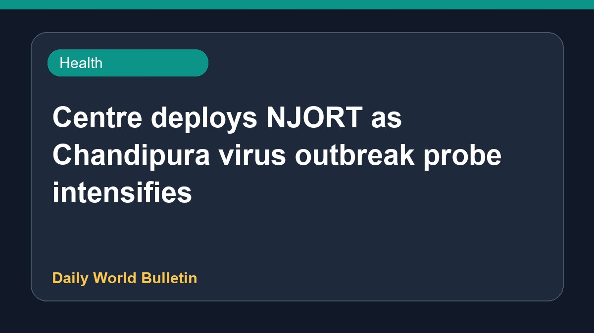

Centre deploys NJORT as Chandipura virus outbreak probe intensifies

The central government has deployed the National Joint Outbreak Response Team as multi-institutional investigations intensify into the Chandipura virus outbreak. Reports indicate that 22 children have died in Gujarat during this monsoon season, with seven others currently receiving medical treatment. Health authorities in the state have been placed on high alert. Medical experts have highlighted why children remain particularly vulnerable to the infection. Further updates on the situation and control measures are awaited as investigations continue.
Original source: Health News Sources
Centre Deploys NJORT as Multi-Institutional Probe Intensifies into Chandipura Virus Outbreak - News On AIR ↗
Centre Deploys NJORT as Multi-Institutional Probe Intensifies into Chandipura Virus Outbreak - News On AIR ↗